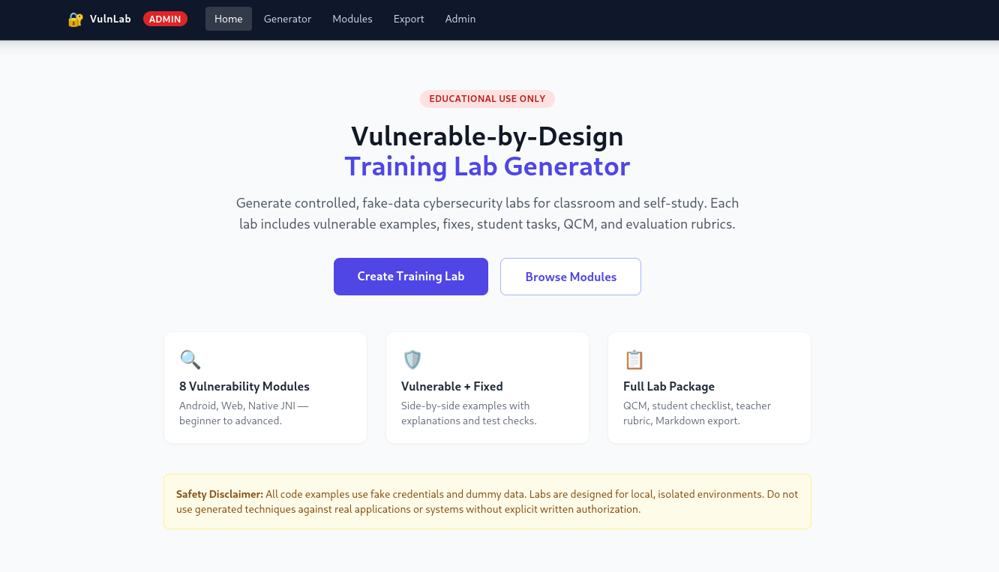
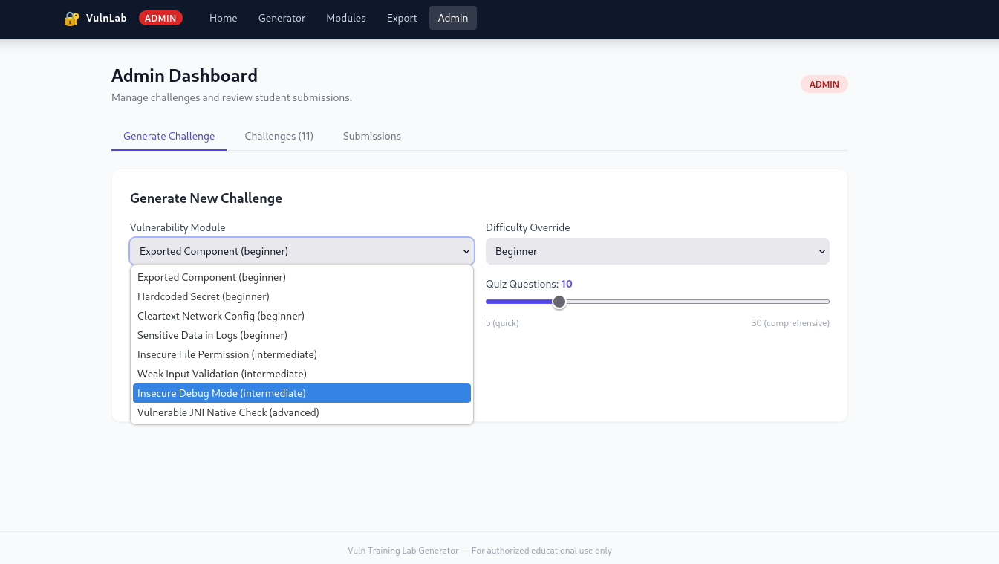
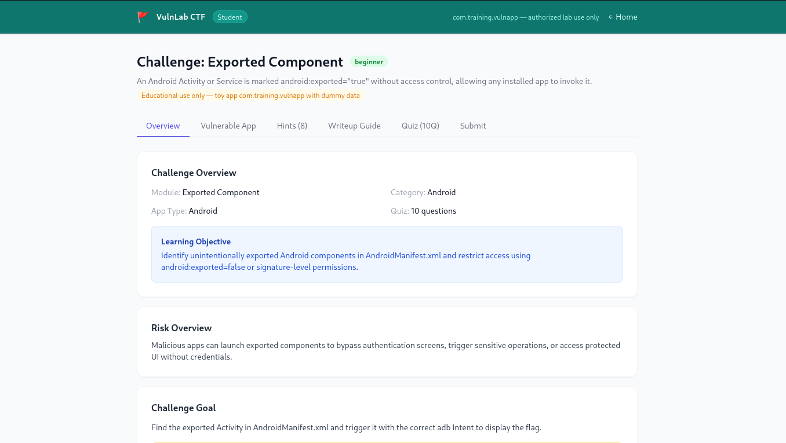
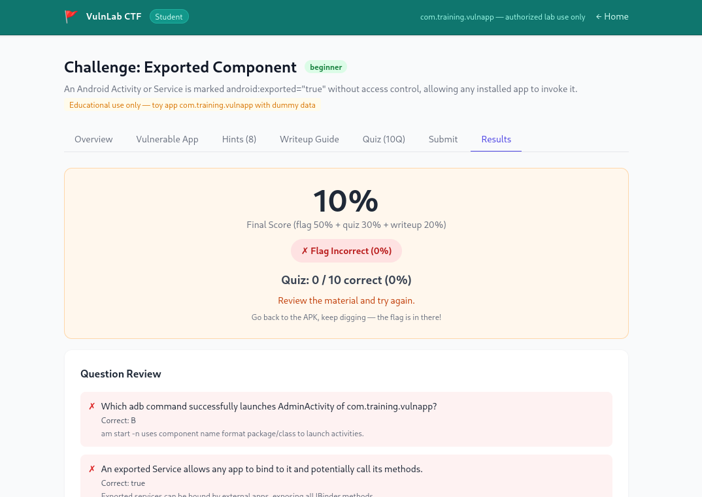
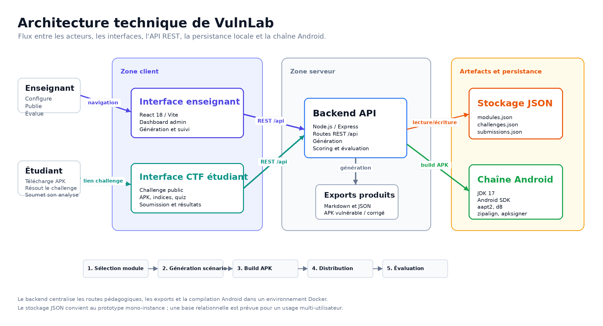

Préparation rapide
L’enseignant choisit un module, un niveau et le volume du quiz.
Projet académique · ENSA Marrakech · Génie Cyber-Défense
VulnLab est une plateforme web dockerisée qui transforme des modules de vulnérabilités mobiles en challenges pédagogiques complets : scénario, APK vulnérable, APK corrigé, quiz, indices, flag, write-up et suivi enseignant.

Motivation
Les applications vulnérables classiques aident à apprendre l’analyse Android, mais elles restent souvent fixes : même interface, mêmes secrets, même chemin de résolution. VulnLab ajoute une couche pédagogique complète autour de ces exercices : génération de challenge, consignes, indices progressifs, quiz, soumission et correction.
La plateforme cible les séances encadrées. Chaque lab utilise des données fictives et un périmètre autorisé afin de former les étudiants à l’observation, à la justification technique et à la remédiation, sans exposer de systèmes réels.
L’enseignant choisit un module, un niveau et le volume du quiz.
Le backend produit une version vulnérable et une version corrigée.
Les réponses, flags et write-ups sont centralisés pour la correction.
Workflow
Le parcours sépare clairement le rôle enseignant et le rôle étudiant.
Choix du module, difficulté, nombre de questions et visibilité de la version corrigée.
Création du scénario, des indices, du quiz, du flag et des artefacts exportables.
L’étudiant télécharge l’APK, observe le comportement et répond au quiz.
Le flag et le write-up sont envoyés puis évalués par l’enseignant.
Interface
La galerie reste volontairement courte : elle montre les quatre moments clés sans surcharger la page.



Architecture
Le frontend expose les interfaces, le backend orchestre la logique et la chaîne Android produit les APK installables.

React 18, Vite, TailwindCSS, routes enseignant et étudiant.
Node.js, Express, API REST, services de génération, scoring et export.
JDK 17, Android SDK, aapt2, d8, zipalign et apksigner.
Fichiers JSON pour modules, challenges et soumissions.
Positionnement
VulnLab ne remplace pas les standards OWASP ni les applications volontairement vulnérables. Il ajoute une génération de labs, une distribution CTF et un suivi pédagogique autour d’APK Android.
Évolution
La limitation principale actuelle est que la génération peut varier le contenu pédagogique et le flag, mais reste limitée pour produire automatiquement des interfaces Android différentes.
Créer un agent capable de produire automatiquement des variantes d’interface, de ressources, de textes et de chemins de résolution.
Changer l’emplacement du flag dans le code, les ressources, le manifeste, les logs ou la couche native.
Construire des templates multi-niveaux pour générer plusieurs labs équivalents sans répétition.
Démonstration
La démonstration montre la génération d’un challenge, l’accès étudiant, le téléchargement de l’APK, le quiz et le suivi des résultats.
Ouvrir sur YouTube
Équipe
Programme Génie Cyber-Défense et Systèmes de Télécommunications, ENSA Marrakech.
aka Axolotl
aka Jettlee
aka z3r0-xr7
Portfolio ↗aka s4m